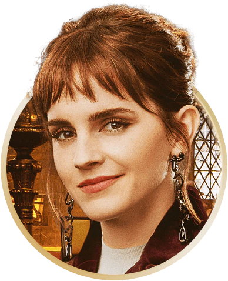
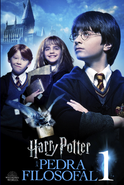

ENTRAR
ASSINE AGORA

DÍSPONIVEL AGORA
Essa reunião tão esperada chega
com muita magia.
ECONOMIZE 5 MESES
COM O PLANO ANUAL*
ASSINE AGORA
*termos se aplican.
PREPARE-SE PARA FEITIÇOS, MAGIA E EMOÇÕES
O tempo passou, e a saga do menino que viveu para enfrentar Lord Voldemort completou 20 anos! E pra comemorar em grande estilo, nada melhor do que reunir todo o elenco. Participe desse reencontro mágico, e reviva a história que marcou toda uma geração.
OS BRUXOS

DANIEL
RADCLIFFE

EMMA
WATSON

RUPERT
GRINT
ACCIO MARATONA! PRA IR AQUECENDO

HARRY POTTER E A PEDRA FILOSOFAL:
Onde tudo começou! Reviva o momento em que Harry descobre que é um bruxo. 100% nostalgia.
HARRY POTTER E A CÂMARA SECRETA:
Um dos episódios mais sombrios da saga, onde pessoas começam a ficar misteriosamente petrificadas em Hogwarts.
HARRY POTTER E O PRISIONEIRO DE AZKABAN:
As crianças cresceram! A história de Harry e seus amigos muda quando eles percebem que a justiça nem sempre é o que parece.
HARRY POTTER E O CÁLICE DE FOGO:
A Copa Mundial de Quadribol, o Torneio Tribruxo e aquele final chocante são alguns dos elementos desta quarta parte.
HARRY POTTER E A ORDEM DA FÊNIX:
Você é o-quem-não-deveria-ser-nomeado? É hora de ver Harry convencer o mundo mágico sobre o retorno de Voldemort.
HARRY POTTER E O ENIGMA DO PRÍNCIPE:
Vamos erguer nossas varinhas ao céu para homenagear o maior bruxo de todos os tempos. Você sabe de quem estamos falando.
HARRY POTTER E AS RELÍQUIAS DA MORTE: PARTE 1:
O início do fim nos leva a uma jornada fora de Hogwarts para encontrar os itens que destruirão o Lorde das Trevas.
HARRY POTTER E AS RELÍQUIAS DA MORTE: PARTE 2:
Um final épico e emocionante, que certamente vai levar suas emoções à flor da pele.
A MAGIA NÃO TERMINA POR AQUI

O Mundo Mágico tem
mais histórias pra você!
Quer aprender mais feitiços?
Assista Animais Fantásticos!
ASSINE AGORA
AGORA NA HBO MAX
EM BREVE
FILME EM DESTAQUE
SÉRIES
AJUDA
Privacidade
Termos de uso
Comunicados de imprensa
Contatos de imprensa
Gerenciar preferências
© 2023 WarnerMedia Direct Latin America, LLC. Todos os direitos reservados. HBO Max é usado sob licença.